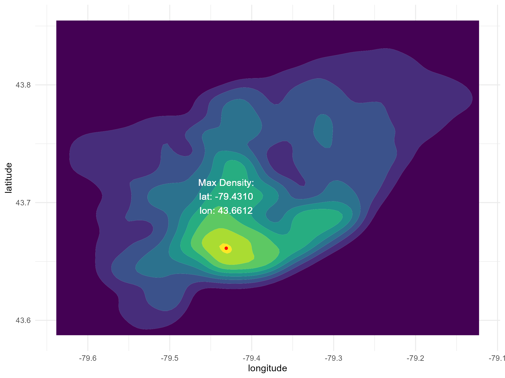
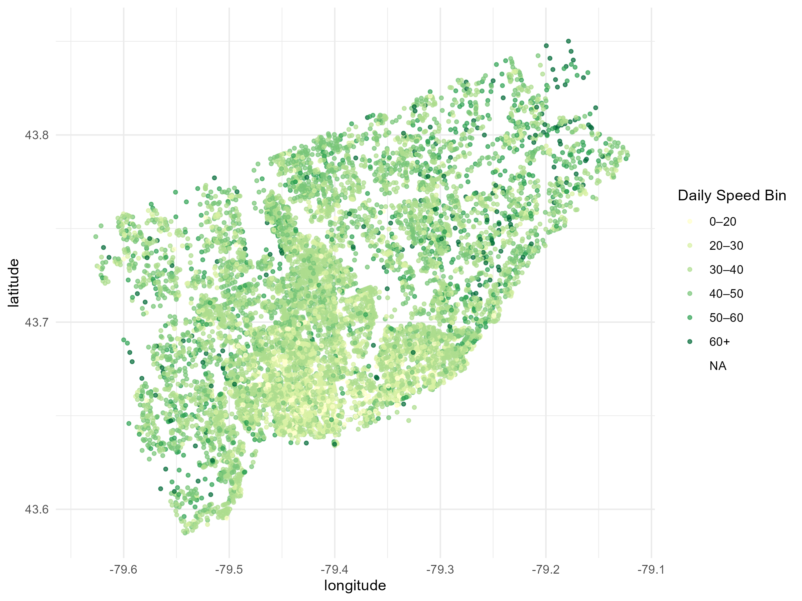
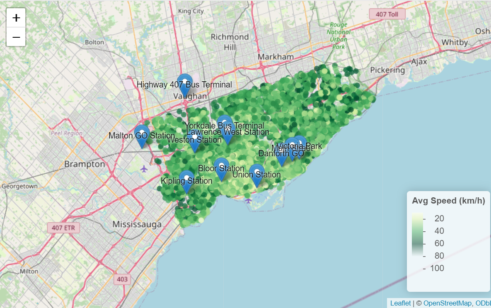
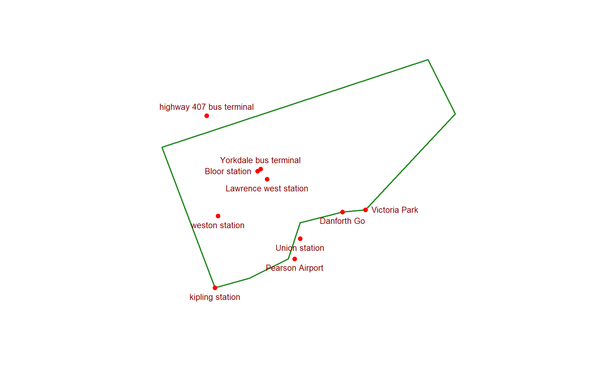

Visualizing Traffic Patterns in Toronto: Speed and Volume

These 4 visualizations shows the observation around the airport region which as a major traffic place with both vehicle volume and travel speeds.

Figure 1(op1) presents a 2D kernel density plot, where brighter regions indicate higher observation counts. Obviously, the area surrounding the airport shows a clear concentration of activity.

Figure 2(op1) illustrates average daily speed across Toronto. Speeds tend to decrease near the airport, maybe due to higher test frequency and heavier traffic volumes.

Figure 3(op1) shows average daily traffic volume. As expected, arterial roads and the airport area experience higher vehicle density, matching well with real-world conditions.

Figure 4(op2) highlights key access routes to the airport used by different communities. Overlaid with average speed data, it confirms slower traffic near the airport zone.

Figure 5(op4) uses graph primitives to sketch the overall layout of the tested region and key station points.
| Geo Coordinate | Records | Avg Daily Volume | Avg Speed |
|---|---|---|---|
| 43.8, -79.5 | 411 | 10082.9 | 40.2 |
| 43.8, -79.3 | 1205 | 9882.7 | 41.3 |
| 43.6, -79.6 | 187 | 9474.3 | 43.3 |
| 43.9, -79.2 | 4 | 9391.3 | 61.3 |
| 43.7, -79.6 | 680 | 8253.0 | 41.3 |
| 43.8, -79.4 | 1067 | 7977.8 | 40.3 |
| 43.8, -79.6 | 114 | 7216.0 | 37.4 |
| 43.8, -79.2 | 875 | 7020.4 | 43.6 |
| 43.6, -79.4 | 624 | 6900.5 | 28.2 |
| 43.6, -79.5 | 894 | 6856.3 | 36.8 |
| 43.7, -79.2 | 271 | 6547.0 | 40.3 |
| 43.7, -79.5 | 2231 | 6199.1 | 36.4 |
| 43.7, -79.3 | 2187 | 5946.3 | 35.7 |
| 43.7, -79.4 | 3650 | 5850.1 | 32.6 |
| 43.8, -79.1 | 82 | 5401.4 | 39.9 |
Figure 6(op5) is a conditionally formatted data table summarizing geographic coordinates, average speed, and volume. Color gradients help highlight which locations experience the most or least congestion.
Visualizing Traffic Patterns in Toronto: Speed and Volume